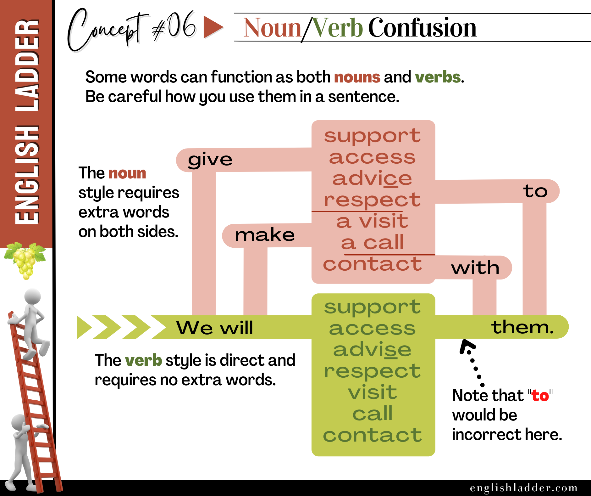

Prompt 01
We need to __________ the new project. (support / give support)
Reveal answer
support
Grammar Concepts #06
This rebuilt lesson keeps the original concept image, tightens the structure, and turns the explanation into a clearer self-study guide.

In English, some words can function as both nouns and verbs. This can sometimes be confusing, especially for non-native speakers. It’s important to use these words correctly in a sentence, as their usage changes depending on whether they are acting as a noun or a verb.
When these words are used as nouns, they typically require extra words around them to make the sentence grammatically correct. Here are some examples:
When these words are used as verbs, they are more direct and do not need extra words. Here are some examples:
The key difference is that noun forms often require additional words (e.g., “give support to,” “make access to”), while verb forms are more straightforward and do not need those additional words (e.g., “support,” “access”). Remembering this can help avoid common mistakes and make your English more fluent and natural.
Try using these words correctly in sentences:
By practicing these examples and understanding the difference, you will improve your accuracy and confidence in using English correctly.
Answer the quiz questions below with responses consistent with proper grammar.
We need to __________ the new project. (support / give support)
support
Can you __________ the files for me? (access / give access)
access
She always __________ wisely. (advises / advice)
advises
He __________ his parents deeply. (respects / respect)
respects
They are planning to __________ to the ancient ruins. (make a visit / visit)
make a visit
I need to __________ to my supervisor. (make a call / call)
make a call
Please __________ with me if you need any help. (make contact / contact)
make contact
We need to give __________ to the team. (support / supporting)
support
You can obtain __________ to the database. (access / accessing)
access
She gave __________ to her friend. (advice / advise)
advice
He has a lot of __________ for his mentor. (respect / respects)
respect
They made a __________ to the museum. (visit / visiting)
visit
We need to make a __________ to the client. (call / calling)
call
She __________ with the author. (made contact / contacted)
contact
We need to __________ the team. (support / support to)
support
You can __________ the database. (access / access to)
access
She __________ her friend. (advised / adviced)
advise
He __________ his mentor. (respects / respect to)
respects
They will __________ to the museum. (make a visit / visit)
visit
We need to __________ the client. (call / call to)
call
She will __________ the author. (contact / contact with)
contact
We need to give them __________ the database. (access to/ access for)
access
She gave __________ wisely. (advice / advise)
advice
He __________ for his mentor. (has respect / respects)
respect